Compression before and after
Saved test renders from the C compression CLI. Vector exports are deliberately lossy Terra sketch derivatives.
PNG decode and vector output
gray-1
BeforeAfter
gray-16
BeforeAfter
gray-2
BeforeAfter
gray-4
BeforeAfter
gray-8
Before After
After gray-8-trns
BeforeAfter
gray-alpha-16
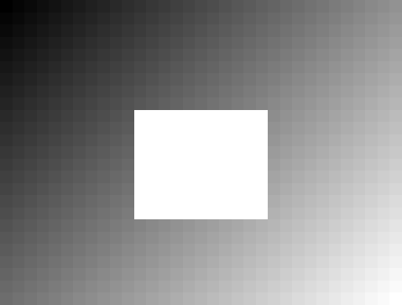
Before After
Aftergray-alpha-8
 Before
Before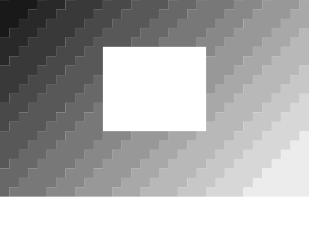
Aftergray-alpha-adam7
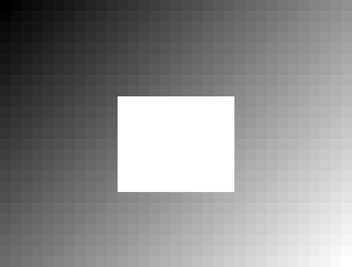
Before After
Afterpalette-1-alpha
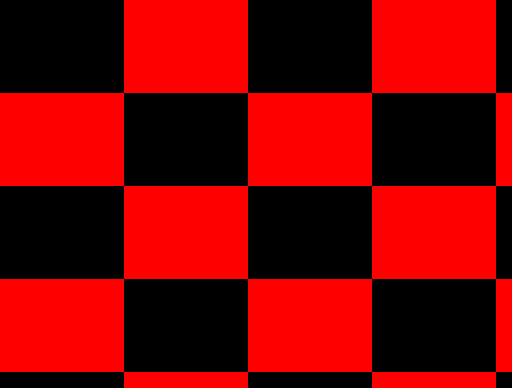
Before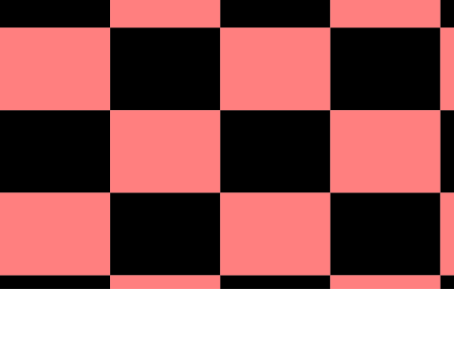
Afterpalette-2-alpha
 Before
Before After
Afterpalette-4-alpha
 Before
Before After
Afterpalette-8-alpha
BeforeAfter
palette-adam7
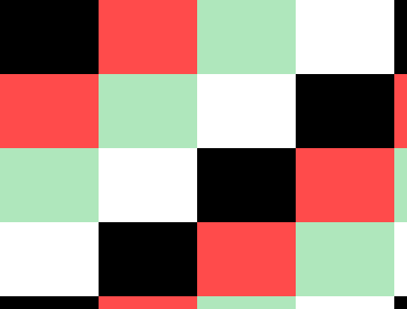
Before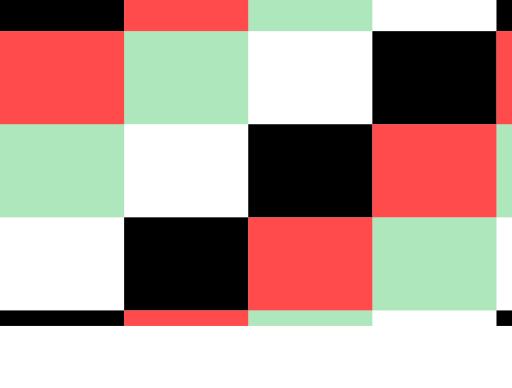
Afterrgb-16
rgb-8
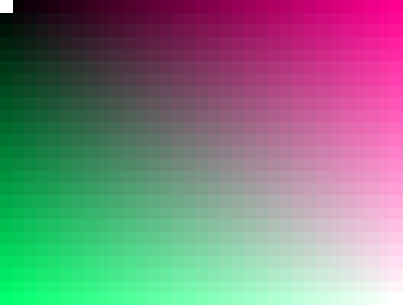
Before After
Afterrgba-16
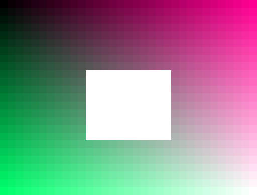
Before After
Afterrgba-8
 Before
Before After
Afterrgba-adam7
BeforeAfter
Representative raster and JPEG cases
Bald PNG: lossless copy
Before After
After Duck PNG: vector output
BeforeAfter
JPEG sketch: vector output
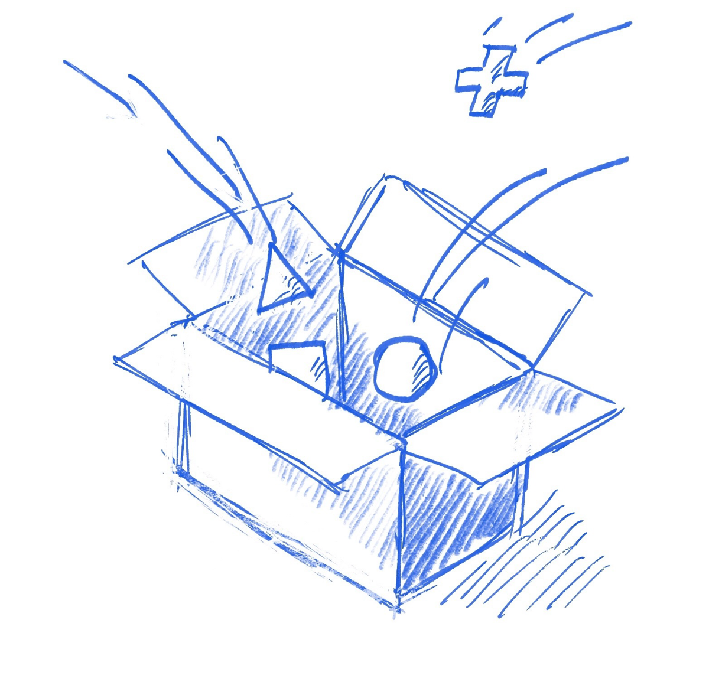
Before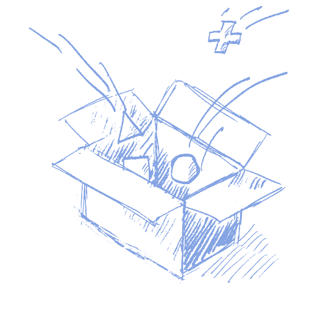
AfterPDF render comparisons
Single-page grayscale PDF
Before After
After Rebuilt PDF, page 1
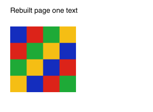
Before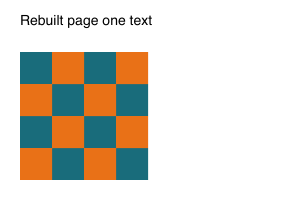
AfterRebuilt PDF, page 2
BeforeAfter
Multi-image PDF, page 1 (unchanged fallback)
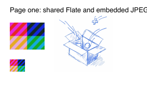
Before After
AfterMulti-image PDF, page 2 (unchanged fallback)
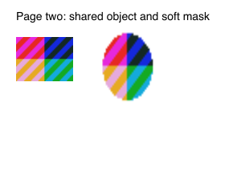
Before After
After